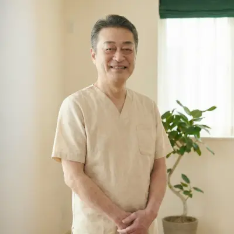
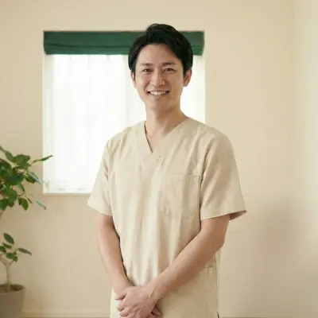

スタッフ紹介・お客様の声

院長 山田 健一 Kenichi Yamada
「痛み」は体からのサインです。
そのサインを無視せず、根本原因に向き合うことで、体は必ず変わります。
私自身、学生時代に腰痛に苦しんだ経験があります。
だからこそ、患者様の「つらい」気持ちに誰よりも寄り添い、
一日でも早く笑顔で生活できるよう全力を尽くします。
どんな些細なお悩みでも、まずはお気軽にご相談ください。
スタッフ紹介
OUR STAFF
鈴木 美咲
鍼灸師
鈴木 美咲
得意な施術：
美容鍼、自律神経調整
女性特有のお悩みや、美容に関するご相談もお任せください。内側からキレイに、健康になるお手伝いをします。

田中 翔太
整体師・トレーナー
田中 翔太
得意な施術：
スポーツ障害、姿勢改善
スポーツでの怪我やパフォーマンスアップはお任せを。ご自宅でできる簡単なトレーニング指導も好評です！
佐藤 優子
受付・カウンセラー
佐藤 優子
得意なこと：
お話を聞くこと
初めての方でも安心して過ごしていただけるよう、笑顔でお迎えします。予約や料金のことなど、何でも聞いてくださいね。
お客様の声
VOICE

長年の肩こりが嘘のように楽に！
デスクワークで万年肩こりに悩んでいましたが、一度の施術で可動域が広がり驚きました。先生の説明も分かりやすく、安心して通えます。

腰痛で歩くのも辛かったのが改善
整形外科では湿布をもらうだけでしたが、こちらでは原因を突き止めて根本から治してくれます。今では趣味のゴルフも再開できました。

産後の骨盤矯正で体型が戻りました
産後、腰痛と体型崩れが気になり来院。子供連れでも快く対応していただき、骨盤もしっかり締まりました。ママ友にも勧めています。
頭痛薬を飲む回数が減りました
PC作業による首こりと偏頭痛に悩まされていました。施術を受けると視界がクリアになり、頭痛の頻度も激減しました。
階段の昇り降りが楽になりました
膝が痛くて外出が億劫でしたが、こちらで施術と筋トレ指導を受けてから、以前のように散歩を楽しめるようになりました。